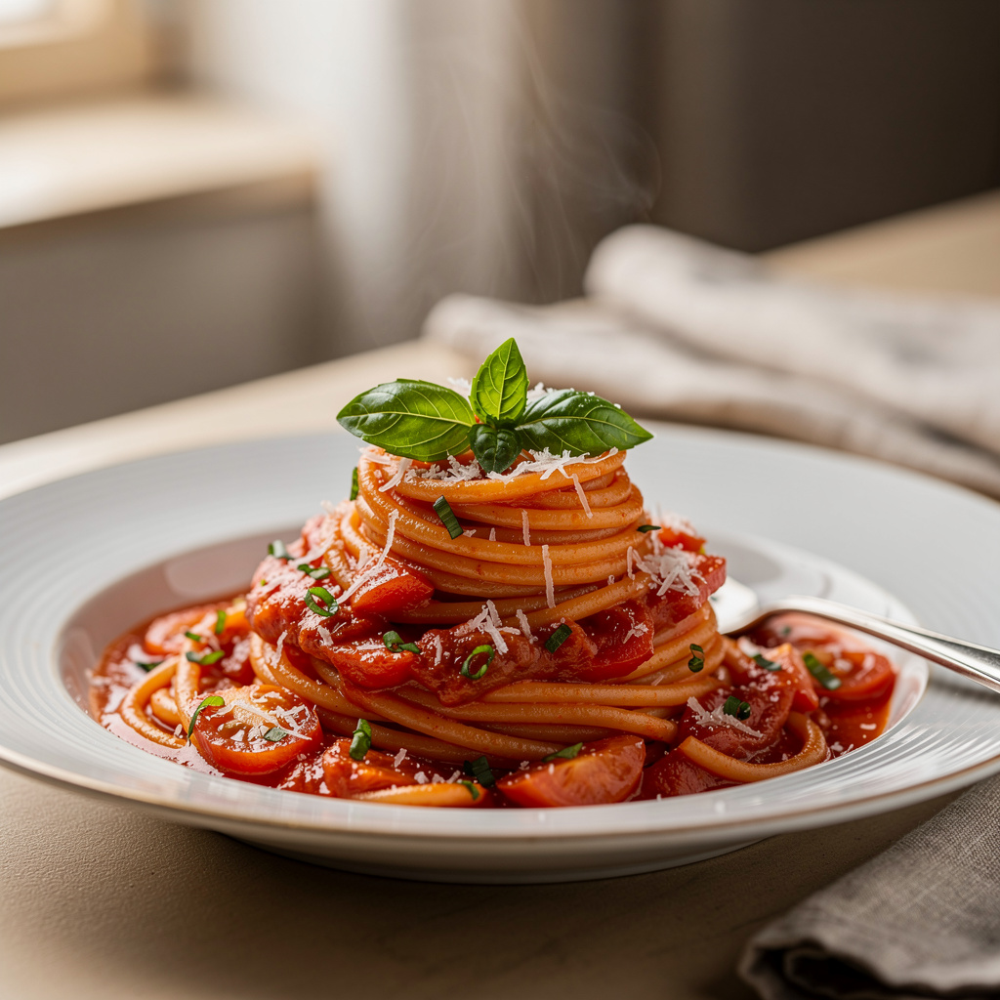

Spaghetti Bolognese is a comforting Italian pasta dish made with rich tomato and meat sauce. This classic recipe combines simple ingredients to create a flavorful and satisfying meal perfect for lunch or dinner.
Cook spaghetti until al dente. In another pan, cook ground beef with garlic until browned. Add tomato sauce and simmer. Mix pasta with sauce and serve hot with grated cheese.